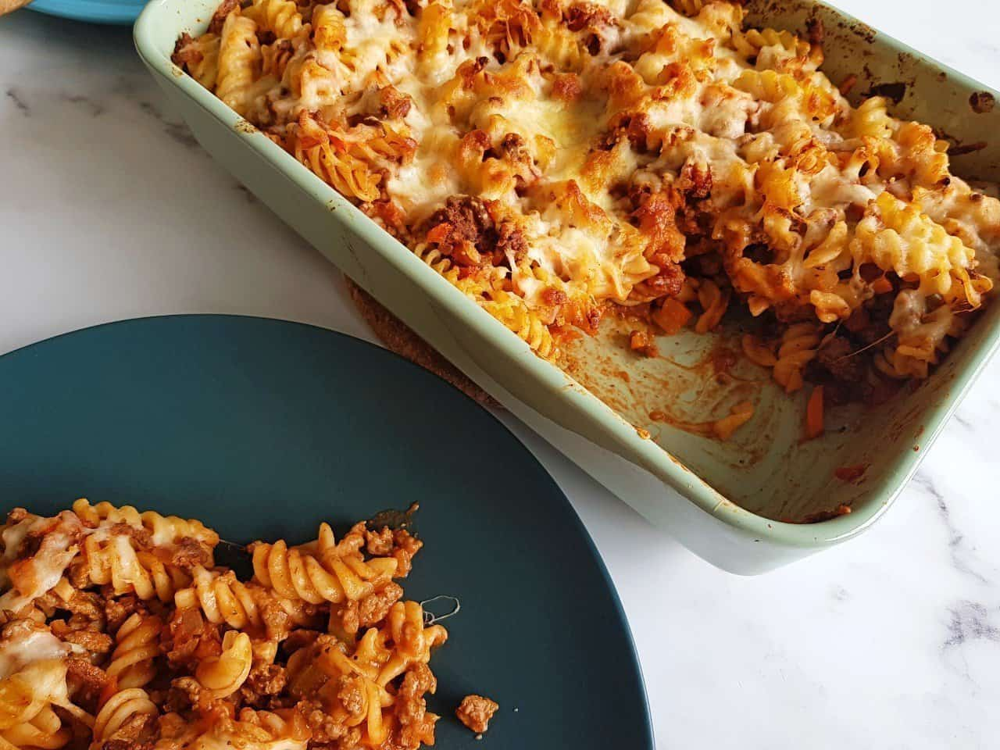

Pasta Bake Recipe

Ingredients
- 300 g pasta
- 500 g minced beef
- 1 carrot
- 1 celery stick
- 3 tablespoon tomato puree or tomato paste
- 400 ml tinned chopped tomatoes
- ½ red onion
- 2 garlic cloves
- 1 teaspoon dried basil
- 1 teaspoon dried thyme
- 1 teaspoon dried oregano
- ½ teaspoon dried fennel
- 100 g grated cheese
Instructions
- Boil the pasta according to package instructions.
Drain off the water, and set to the side.
Meanwhile, you can start the beef sauce.
- Set the oven to 200°C / 180°C fan oven / 400°F
- Finely dice celery, onion, carrot and garlic cloves.
You want to chop them into really small pieces.
- Heat some oil in a pot or very large frying pan.
Add diced onion, and saute until it has softened and turned translucent, 3-4 minutes. Add garlic and saute for another minute.
- Add the minced beef and cook until the meat has almost browned.
Then, add basil, thyme, oregano and fennel, and cook until
the meat has completely cooked.
- Stir in the tomato puree, then add the chopped tomatoes,
carrots and celery, and cook until the vegetables have
softened, about 10 minutes.
- Add the beef sauce and pasta to a oven dish, and stir to
combine thoroughly. Top with grated cheese, and place it in
the oven. Bake until the cheese has melted, and the top is
golden browned, about 20-30 minutes.
- Remove from the oven and serve!